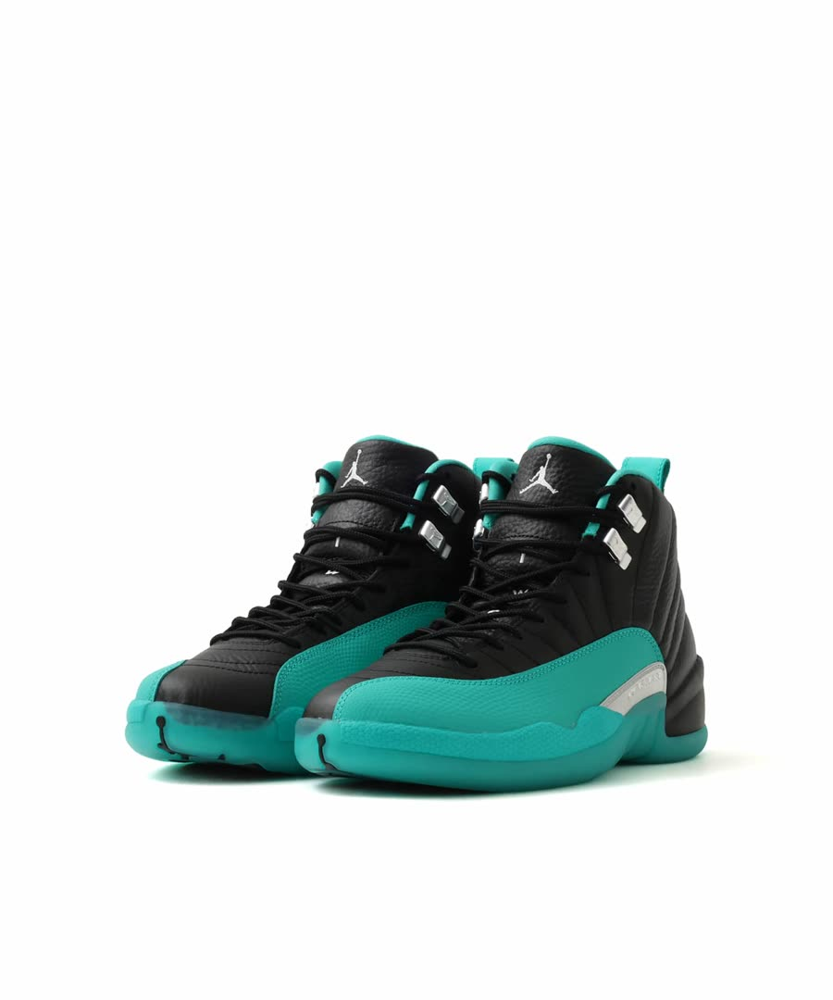

2026-11-09
アトモス限定のAJ12「atmos JADE」が欲しい。WEB抽選に応募した
今いちばん欲しい靴は、アトモス限定のエアジョーダン12「atmos JADE」 です。
11月9日に、アトモスオンラインのWEB抽選に応募しました。


画像：アトモス公式サイトより
どんな靴か
- 名前：atmos × Air Jordan 12 Retro "atmos JADE"
- 品番：JA4480-010
- 定価：31,900円（税込）
- 最初の発売：アトモスのイベント「atmoscon 2026」（10月31日〜11月1日）の会場だけで売られました
会場に行けなかった人は買えなかった靴なので、WEB抽選の発表が出たときはうれしかったです。
なぜ欲しいか
理由は2つです。
1つ目は、単純に デザインが好み だから。黒のレザーにジェイドグリーンを合わせた配色に惹かれました。
2つ目は、アトモス限定 だから。どこでも買える靴ではない、というところにも惹かれています。
WEB抽選に応募した
- 応募先：アトモスオンラインのWEB抽選（アトモス公式）
- 応募期間：11月9日（月）9:00〜11月20日（金）8:59
- 応募できる人：アトモスの会員で、日本に住んでいる人
- 当選発表：アトモス公式の中で「11月21日（土）9:00」と「11月23日（月）9:00」の2つの書き方があります
応募のときに気をつけたいのは、応募完了のメールも、当選のメールも来ない ことです。
結果はアトモスのマイページの「抽選応募履歴」で、自分で確認する必要があります。メールを待っていると見落とすので、応募した人は気をつけてください。
くわしい条件は アトモス公式の特集ページ に載っています。
結果が出たら追記します
当たったか、落ちたか、結果が出たらこの記事に追記します。
当たったら、届いた靴の写真と、はいてみた感想も書く予定です。